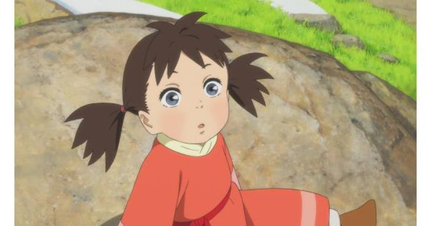

Maybe it's just me, but it feels as though we haven't had as many original epic-fantasy-adventure stories in anime theatrical films in recent years. The 2000's were a boon for that genre, giving us movies like "Steamboy," "Sword of the Stranger," "Origin - Spirits of the Past," and more. This helped make 2021's "The Deer King" both refreshing and nostalgically familar. It struggles to adapt the entirety of the world based on a series of novels however, and one glaring issue is how similar it is, yet inferior, the Studio Ghibli's "Princess Mononoke." An opening paragraph of text explains the background of the world, of the conquering empire of Zol and vengeful nation of Aquafa. Zol's conquest was cut short by a mysterious band of wolves that carried a plague known as "Black Wolf Fever" (frustratingly, the English dub quickly decides to refer to it as the "Mitsuha," which is much less descriptive), a disease only affecting people of Zol. Thus, an uneasy ceasefire has developed. Elsewhere, in Zol's underground mines, slaves are put to work when the wild dogs attack and slaughter the entire group, except for one imprisoned slave named Van, whose bravery also saves a infant girl from a dog's jaws. Van survives their bite, but instead of a disease, he gains a mysterious inhuman strength, and hears voices calling to him to become the Dog King. Ignoring this, he escapes with the girl Yuna to a small village, hoping to live their lives in peace, despite Van's secret past as a mighty warrior for Aquafa, the effect of the dog's bite on his arm, and the political machinations of both nations. I was surprised at how much political scheming was including in the movie, including from multiple parties within Zol that each plot for their own rise to power. I wasn't expecting most of the movie to focus on Van choosing a life of peace and retirement over a life of defiance and fighting, all for the sake of Yuna, to whom he becomes a surrogate father. The story is forced to move forward when the wolves steal Yuna, and voices beckon Van to find them in Fire Horse Village, a central part of Aquafa's nation - he's accompanied by a Zol tracker tasked to imprison or kill them, and a Zol doctor who believes Van's blood could cure the Fever in others. This is much more in line with what I expected, but that journey doesn't begin until halfway through the movie. In short, this is an incredibly dense story with a lot of world-building, and there is a potentially great story in here. But the directors had trouble deciding what to keep and what to cut, and the resulting scope feels too big while simultaneously missing crucial emotional or contextual development, especially noticable with the rushed but strong ending. I suspect if it was edited down (possibly cutting entire side characters), or if an extra 10 minutes of efficient dialogue was added, this could have been pushed above to a higher level. But as it is, the story is a bit of a miss.  And again, so much of the world and story is borrowed from "Princess Mononoke." Van rides a horned elk (hence the named "Deer King") like the main character of "Mononoke." They come across the joking traveler with a broken leg, accompanying him back to his village. The wolves swarm like a purple shadow, much like the cursed monster at the beginning of "Mononoke," in which wolves were also a major part of the story. The comparisons are difficult to ignore, and while "Mononoke" stands as a timeless fable, "The Deer King" feels more forgettable. Production I.G. animated the movie, again reminding viewers in marketing that they were the ones who brought you "Ghost in the Shell." Their work has always been solid, but to refer to one hit from decades ago isn't a great sign. The movie looks consistently above average, but outside a few brief moments of animation, never looks spectacular. One odd choice was to have backgrounds of forests and mountains look more painterly, while still rendering characters is the standard, detailed, polished style I.G. is known for. Both look good, but the styles clash against each other. The English dub is solid, but in a dense fantasy like this, there isn't much room for big performances. The musical score is sweeping and epic, but could have been replaced with anything else without notice. I think "The Deer King" is still a good movie, and should please fantasy fans looking for something new. But I also felt a bit disappointed, as a few careful choices could have made this a much more effective story and experience.
- "Ani" More reviews can be found at : https://2danicritic.github.io/ Previous review: review_The_Day_the_Earth_Blew_Up_-_A_Looney_Tunes_Movie Next review: review_The_Disappearance_of_Haruhi_Suzumiya